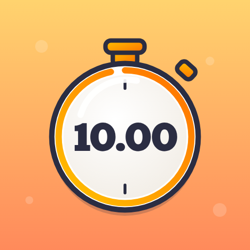

Hit10
Trafisz w 10.00? · Can you hit 10.00?
Zatrzymaj stoper dokładnie na 10.00. Im bliżej, tym więcej Tików.
Za Tiki zatrudniasz dziadka z zegarkiem, babcię z minutnikiem, kukułkę…
aż po maszynę czasu i samego Chronosa. Oni też próbują trafić — i zarabiają,
nawet gdy nie grasz.
Stop the watch at exactly 10.00. The closer you get, the more Ticks
you earn. Spend them on a grandpa with a pocket watch, a grandma with an
egg timer, a cuckoo… all the way up to a time machine and Chronos himself.
They try to hit 10.00 too — and keep earning while you're away.